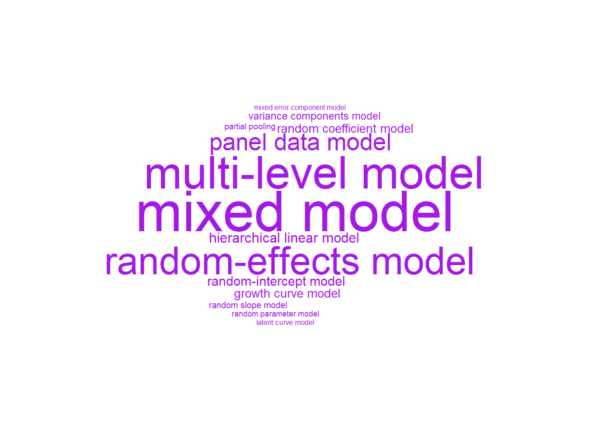
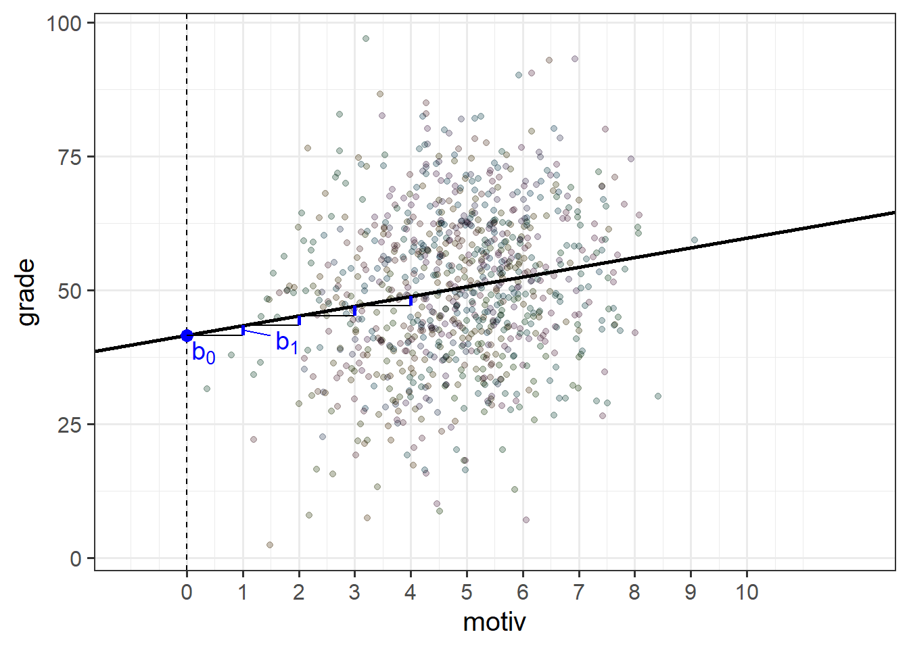

1B: Linear Mixed Models/Multi-level Models
The methods we’re going to start to look at are known by lots of different names (see Figure 1). The core idea is that model parameters vary at more than one level..
Fixed effects
In the simple linear regression model was written as \(\color{red}{y} = \color{blue}{b_0 + b_1x_1 \ + \ ... \ + \ b_px_p} \color{black}{\ + \ \varepsilon}\), the estimated coefficients \(\color{blue}{b_0}\), \(\color{blue}{b_1}\) etc., are estimated as fixed values - i.e. we estimate just one number for \(b_0\), and one number for \(b_1\), for \(b_2\) and so on, and that’s it.
In the example where we model School children’s grades as a function of their motivation score, when we fit a simple regression model of lm(grade ~ motiv), the estimated parameters are two values that define a line - an intercept and a slope (as in Figure 2).

The intercept and slope here are ‘fixed’ in the sense that it does not matter what school a child is from, if they score 0 on the motivation scale, then our model predicts that they will get a grade of 40.3 (the intercept).
schoolmot <- read_csv("data/schoolmot.csv")
srmod <- lm(grade ~ motiv, data = schoolmot)...
Coefficients:
Estimate Std. Error t value Pr(>|t|)
(Intercept) 40.2776 1.8270 22.046 < 2e-16 ***
motiv 1.9551 0.3422 5.714 1.5e-08 ***
---To make this point really clear, we can write our model equation with the addition of a suffix \(i\) to indicate that the equation for the \(i^{th}\) child is:
\[ \begin{align} &\text{For child }i \\ &\text{grade}_i = b_0 + b_1 \cdot \text{motiv}_i + \epsilon_i \end{align} \] i.e. For any child \(i\) that we choose, that child’s grade (\(\text{grade}_i\)) is some fixed number (\(b_0\)) plus some fixed amount (\(b_1\)) times that child’s motivation (\(\text{motiv}_i\)).
The issue, as we saw in 1A #clustered-data, is that the children in our study are actually related to one another in that they can be grouped into the schools that we sampled them from. It’s entirely possible (and likely) that there are school-level differences might actually account for quite a lot of the variation in grades (in 1A #ICC we actually estimated this to account for approx 40% of the variation in grades).
TODO CHECK below
We saw how we might add in school as a predictor to our linear model to estimate all these school-level differences (lm(grade ~ schoolid + motiv)). This is a good start, and may oftentimes be perfectly acceptable if our clustering is simply a nuisance thing that we want to account for - adding in the clustering as another predictor will completely account for all cluster-level variability in our outcome variable.
However, more frequently these clusters are themselves additional units of observation that have features of interest to us. For instance, we may be interested in how the funding that a school receives moderates the association between childrens motivation and grades - i.e. we’re interested in things that happen both at the child-level (motivation, grades), and at the school-level (funding). For these scenarios, we really need a multilevel model.
clusters as fixed effects
We have already seen that we can include fixed effects for cluster differences (we referred to this as “no pooling”).
e.g. to fit school-level differences in grades, we could use:
femod <- lm(grade ~ motiv + schoolid, data = schoolmot)The model equation for this would look something like: \[ \begin{align} \text{For child }i& \\ \text{grade}_i =\, &b_0 + b_1 \cdot \text{motiv}_i + b_2 \cdot \text{isSchool2}_i + b_3 \cdot \text{isSchool3}_i\,\, + \,\, ... \,\, + \\ & ... + \,\, ... \,\, + \,\, ... \,\, + \\ & b_p \cdot \text{isSchoolP}_i\,\, + \epsilon_i \end{align} \]
The school coefficients are a series of dummy variables that essentially toggle on or off depending on which school child \(i\) is from.
Because these set of coefficients accoutn for all of the school-level differences in grades, it means we are then unable to consider other school-level variables like funding (how much govt funding the school receives). If we try, we can see that a coefficient for funding is not able to be estimated because schoolid is explaining everything school-related:
femod2 <- lm(grade ~ motiv + schoolid + funding, data = schoolmot)
summary(femod2)Coefficients: (1 not defined because of singularities)
Estimate Std. Error t value Pr(>|t|)
(Intercept) 36.2655 2.5667 14.129 < 2e-16 ***
motiv 1.5723 0.3673 4.281 2.07e-05 ***
schoolidBalfron High School 1.0683 2.8923 0.369 0.711946
schoolidBanff Academy -3.3253 2.9142 -1.141 0.254163
... ... ... ... ...
... ... ... ... ...
funding NA NA NA NA The multi-level model
The multi-level model is an alternative model structure that accounts for cluster-level differences in a more flexible and parsimonious way. It achieves this by taking some of the estimated coefficients \(b_?\) in our linear regression model and modelling these as randomly varying by clusters (i.e. each cluster gets its own value of \(b_?\)).
Let’s see how this works by starting with the intercept, \(b_0\).
random intercept
To extend the single-level regression model to the multi-level regression model, we add in an extra suffix to our equation to indicate which cluster an observation belongs to.1 Then, we can take our coefficients \(b_?\) and allow them to be different for each cluster \(i\) by adding the suffix \(b_{?i}\). Below, we have done this for our intercept \(b_0\).
However, we also need to define these differences, and the multilevel model does this by expressing each cluster’s intercept as a deviation (\(\zeta_{0i}\) for cluster \(i\), below) from a fixed number (\(\gamma_{00}\), below). Because these differences are to do with the clusters (and not the individual observations within them), we often write these as a “level 2 equation”:
\[ \begin{align} \text{For observation }j&\text{ in cluster }i \\ \text{Level 1:}& \\ y_{ij} &= b_{0i} + b_1 \cdot x_{ij} + \epsilon_{ij} \\ \text{Level 2:}& \\ b_{0i} &= \gamma_{00} + \zeta_{0i} \\ \end{align} \]
mixed-effects notation
Instead of writing several equations at multiple levels, we substitute the Level 2 terms into the Level 1 equation to get something that is longer, but all in one:
\[ \color{red}{y_{ij}} = \underbrace{(\gamma_{00} + \color{orange}{\zeta_{0i}})}_{\color{blue}{b_{0i}}} \cdot 1 + \color{blue}{b_{1}} \cdot x_{ij} + \varepsilon_{ij} \]
This notation typically corresponds with the “mixed effects” terminology because parameters can now be a combination of both a fixed number and a random deviation, as in the intercept below:
\[ \color{red}{y_{ij}} = \underbrace{(\underbrace{\gamma_{00}}_{\textrm{fixed}} + \color{orange}{\underbrace{\zeta_{0i}}_{\textrm{random}}})}_{\text{intercept, }b_{0i}} \cdot 1 + \underbrace{b_2}_{\textrm{fixed}} \cdot x_{ij} + \varepsilon_{ij} \]
Returning to our school children’s grade example, we can fit a model with “random intercepts for schools”, which would account for the possibility that some schools have higher grades, some have lower grades, etc.
\[ \begin{align} \text{For Child }j\text{ in School }i& \\ \text{Level 1 (child):}& \\ \text{grade}_{ij} &= b_{0i} + b_1 \cdot \text{motiv}_{ij} + \epsilon_{ij} \\ \text{Level 2 (school):}& \\ b_{0i} &= \gamma_{00} + \zeta_{0i} \\ \end{align} \] If we consider one of our schools (e.g. “Dyce Academy”) we can see that our model predicts that this school has higher grades than most other schools (Figure 3). We can see how this is modelled as a deviation \(\zeta_{0\text{DA}}\) (DA for Dyce Academy) from some fixed value \(\gamma_{00}\).
TODO PANEL PLOT
At this point, you might be wondering how this is any different from simply fitting clusters as an additional predictor in a single level regression (i.e. a clusters-as-fixed-effect approach of lm(grade ~ motiv + schoolid)). This would also estimate an difference for each cluster?
The key to the multilevel model is that we are not actually estimating the cluster-specific differences themselves (although we can_ get these out). We are estimating a distribution of differences.
Specifically, the parameters of the multilevel model that are being estimated are the mean and variance of a normal distribution of clusters.
So the parameters that are estimated from our model with a random intercept by-schools, are:
\[ \begin{align} \text{For Child }j\text{ in School }i& \\ \text{Level 1 (child):}& \\ \text{grade}_{ij} &= b_{0i} + b_1 \cdot \text{motiv}_{ij} + \epsilon_{ij} \\ \text{Level 2 (school):}& \\ b_{0i} &= \gamma_{00} + \zeta_{0i} \\ \text{where: }& \\ &\varepsilon_{ij} \sim N(0,\sigma_\varepsilon) \\ &\zeta_{0i} \sim N(0,\sigma_0) \\ \end{align} \]
- a fixed intercept \(\gamma_{00}\)
- the variance with which schools deviate from the fixed intercept \(\sigma_0\)
- a fixed slope for
motiv\(b_1\)
- (and we also get the residual variance too, in \(\sigma_\varepsilon\))

random slopes
\[ \begin{align} \text{For observation }j&\text{ in cluster }i \\ \text{Level 1:}& \\ y_{ij} &= b_{0i} + b_{1i} \cdot x_{ij} + \epsilon_{ij} \\ \text{Level 2:}& \\ b_{0i} &= \gamma_{00} + \zeta_{0i} \\ b_{1i} &= \gamma_{10} + \zeta_{1i} \\ \end{align} \]

intercepts vary slopes vary
TODO PANEL PLOT
partial pooling
It’s tempting to think that we could get the fixed intercept \(\gamma_{00}\) by calculating a simple linear model for each school and taking the average intercept. However, the multilevel model is more clever than that. The amount by which Each cluster in a multilevel model contributes to the estimate of the fixed intercept by an amount that depends on:
- how much between-cluster variation there is relative to within-cluster variation (TODO if clusters are very distinct )
- the number of observations in each cluster
This is a really useful feature, because it means that we
less data and, when clusters are quite similar/less distinct, then they contribute similar amounts
- socialist vs liberal analogy?
how/why does it do this? by modelling a distribution of lines

optional: how does it work?
\[ \frac{\sigma^2_{b} }{\sigma^2_b + \frac{\sigma^2_e }{n_i}} \]
This means that the fixed center of this distribution (the \(\gamma_00\)) However,
TODO - what defines the amount to which a cluster contributes to the fixed estimate?
how do far away/few n clusters influence the estimate?
in the multilevel modelling approach, each school gets its own intercept and slope, but these ‘borrow strength’ from the others.
The borrowing of strength is more apparent for the (what would be) more extreme clusters, as well as those that have fewer datapoints. What happens to these cluster estimates is that they are shrunk towards the population average.
\(\frac{\sigma^2_{b} }{\sigma^2_b + \frac{\sigma^2_e }{n_i}}\)
more shrinkage when: - smaller n_j - when within var is large relative to between var - both of these are basically ‘when we have less information about that group’
https://jeanettemumford.org/MixedModelSeries/v4-introduction-to-regularization-in-mixed-models.html#introduction-2
https://jeanettemumford.org/MixedModelSeries/v5-conditional-modes-vs-means.html#the-equation-for-shrinkage
fitting multilevel models in R
fixed estimates = average cluster
lme4 lmer
what are the model parameters? i.e. variance components.
eq with model params coloured
we can get out estimates of the specific group-lines if we want, but really the model is estimating the variances.
terminology: fixed effects, random effects, variance components
we often use “random effects” to just mean the distribution of random deviations. i.e.
sometimes you might hear “random effect of group” “random effect for group” “random effect [of x] by group”
generally, people are referring to the (1 + ... | cluster) bit.
graphic on how to read it.
intercept >> 1 slope of x >> x | >> varies by these groups >> cluster
a common stumbling block. “effect of x varies by cluster” is not the same as “x varies by cluster”.
model parameters
what are the model parameters? i.e. variance components.
eq with model params coloured $$
$$
cluster predictions
ranef
fixef + ranef = coef
dotplot.ranef.mer
model estimation
ML and REML
MLE explainer
- problem for lmm est fix > est varcorr > est fix > est varcorr est of varcorr assumes fixed effects are known. this biases var ests to be slightly smaller
a bit like n-1 in formula for sd
REML - OLS to partial out fixef > est varcorr > est varcorr > est varcorr > use GLS to est fixef - in the estimation of varcorr, the fixed effects are 0 by definition
convergence issues
convergence warnings, singular fits
Footnotes
Some books use “cluster \(j\) >> observation \(i\)”, others use “cluster \(i\) >> observation \(j\)”. We use the latter here↩︎